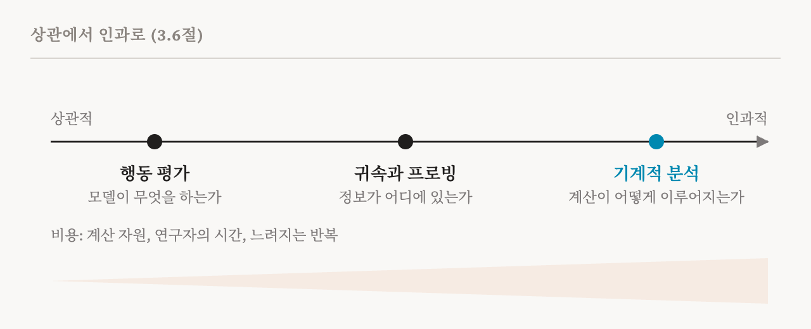

2편은 시험 점수만으로는 모델이 어떻게 작동하는지 알 수 없으니, 안을 들여다보는 방법이 필요하다는 결론으로 끝났습니다. 그런데 '해석 가능성'이라는 말에는 여러 다른 방법이 들어 있습니다. 방법마다 내놓는 증거가 다르고, 그 증거로 뒷받침할 수 있는 주장의 강도가 다르고, 실제로 쓸모 있는 상황도 다릅니다. 이번 편은 이 책의 3장(16–21쪽)을 다룹니다. 3장은 이 방법들을 몇 갈래로 나누고, 핵심 질문 하나를 던집니다. 기계적 분석은 언제 꼭 필요하고, 언제 더 간단한 방법으로 충분할까요?
이 책은 네 갈래를 살펴봅니다. 그중 일부는 기계적 해석 가능성 자체가 아니라 자연어 처리와 표현 학습이라는 더 넓은 연구 공동체에서 나왔습니다. 이 방법들은 지금도 널리 쓰입니다. 기계적 연구를 보완할 때도 있고, 대신할 때도 있습니다.
행동 기반 방법
행동 기반 방법은 입력과 출력을 통해 모델을 연구합니다. 대규모 언어 모델이 나오기 전, 연구자들은 언어 모델이 문법을 제대로 익혔는지 꼼꼼히 시험했습니다. 예를 들어 동사가 여러 단어 떨어진 곳에 있는 주어와 수를 맞추는지 보는 식이었습니다. 오늘날의 행동 평가는 훨씬 넓은 범위를 다룹니다. 전문 분야와 학문 지식, 긴 문서의 이해, 수학적 추론, 코딩 능력까지 잽니다.
안전 위험을 재는 주된 방법도 행동 평가입니다. 기만적인 의도, 아첨(sycophancy, 사용자가 듣고 싶어 하는 말을 해 주는 경향), 해를 끼치는 데 쓰일 수 있는 능력, 탈옥(jailbreak) 공격에 대한 견고성, 오염된 학습 데이터에 대한 취약성을 각각 시험합니다. 정치적 성향이나 사회적 태도 같은 더 넓은 특성을 재는 평가도 있습니다.
행동 기반 방법의 큰 장점은 실용성입니다. 모델을 평소처럼 실행하고 답을 기준 답안과 비교하기만 하면 되므로, 빠르고, 비용이 적고, 규모를 키우기 쉽습니다. 2편에서 본 것처럼, 유한한 시험으로는 어떤 메커니즘이 행동을 만들었는지 확정할 수 없습니다. 그래도 이 책은 행동 기반 방법을 실무에서 꼭 필요한 도구라고 부릅니다. 개발 중에 빠르게 고쳐 나갈 때, 어떤 행동을 더 깊이 볼지 정할 때, 기계적 분석을 하기에는 비용이 너무 클 때 넓게 안전을 점검하는 데 쓰입니다.
개념 기반 접근
개념 기반 방법은 그 중간에 있습니다. 모델의 내부 표현을 보기는 하지만, 대개 상관적인 주장, 곧 어떤 개념과 어떤 내부 신호가 함께 나타난다는 주장까지만 뒷받침합니다. 여기에 개입을 결합하면, 예를 들어 개념의 방향을 따라 모델을 조종하거나 개념과 연결된 구성 요소를 제거하면, 이 책의 두 조건을 만족하는 기계적 분석이 됩니다. 이 연결을 형식적으로 다루는 연구도 있습니다. 모델의 계산을, 사람이 이해하는 개념을 노드로 하는 상위 수준의 인과 그래프에 맞춰 보는 방식으로, 인과적 추상화(causal abstraction)라고 부릅니다.
개념 기반 방법에는 두 종류가 있습니다. 첫째는 학습할 때부터 개념을 모델 안에 넣는 방식입니다. 개념 병목 모델(concept bottleneck model, CBM)은 모델이 계산하는 도중에 반드시 사람이 미리 정해 둔, 읽을 수 있는 개념들의 층을 거치게 합니다. 2020년의 원래 논문에서는, 예를 들어 새를 분류하는 모델이 먼저 날개 색이나 부리 모양 같은 속성을 예측하고, 그 속성만 보고 새의 종을 결정해야 했습니다. 이렇게 하면 모델은 처음부터 투명해지고, 일종의 개입도 할 수 있습니다. 잘못 예측된 속성을 사람이 고쳐 주면 결정이 어떻게 바뀌는지 볼 수 있습니다.
대가는 누군가 관련 개념을 모두 미리 나열해야 한다는 것입니다. 목록이 불완전하면 정확도가 떨어집니다. 이른바 정확도와 해석 가능성 사이의 상충(accuracy–interpretability trade-off)입니다. 이후의 변형들은 이런 한계를 완화합니다. 개념 임베딩 모델은 병목이 고차원의 추가 정보도 실어 나르게 해서 정확도를 되찾지만, 그 대가로 아무도 읽을 수 없는 정보가 새어 들어옵니다. 개념들이 서로 어떻게 의존하는지 학습하는 변형도 있고, 모델의 활성값에서 개념을 직접 찾아내거나 대형 기반 모델에게 개념을 제안하게 하는 변형도 있습니다.
둘째는 학습이 끝난 뒤에 쓰는 방식입니다. 예를 들어 개념 활성 벡터(concept activation vector, CAV)는, 사람이 지정한 개념이 들어 있는 입력과 들어 있지 않은 입력을 이용해, 이미 학습된 모델의 활성값에서 그 개념에 해당하는 방향을 찾습니다. 이런 방법은 대개 모델의 계산에서 그 개념이 어떤 역할을 하는지에 대한 인과적 증거를 주지 못합니다. 그래도 이 책은 감사(auditing), 정보가 있는 위치 찾기, 문제의 조기 탐지에 쓸모 있는 도구로 봅니다. 표현 공학(representation engineering)은 같은 아이디어를 관찰에서 개입으로 넓혀, 개념 방향을 이용해 행동을 조종합니다. 이 내용은 25편에서 다룹니다.
이 책은 놓치기 쉬운 구별도 하나 짚습니다. 개념 병목 모델은 처음부터 해석하기 쉽게 설계한 모델(15편에서 다룹니다)과 한데 묶이곤 하지만, 둘이 거는 제약은 다릅니다. CBM은 의미적 제약을 겁니다. 개념을 사람이 미리 고릅니다. 해석 가능하게 설계한 모델은 희소성이나 모듈성 같은 구조적 제약을 걸고, 특징은 모델이 스스로 찾게 둡니다. 관심 있는 개념을 이미 알고 있다면 CBM이 나을 수 있습니다. 모델이 무엇을 배웠는지, 아무도 찾아볼 생각을 못 한 것까지 발견하는 것이 목표라면 구조적 접근이 더 잘 맞습니다. 알려지지 않은 실패가 가장 큰 걱정거리인 안전 분야에서는, 발견을 돕는 방법이 더 쓸모 있을 수 있다고 이 책은 봅니다.
입력 귀속과 살리언시
입력 귀속(input attribution) 방법은 입력의 어느 부분이 출력에 가장 큰 영향을 주었는지 묻습니다. SHAP, LIME, DeepLIFT, 적분 그래디언트(integrated gradients), 살리언시 맵(saliency map)이 잘 알려진 예입니다. 예를 들어 이미지 분류기의 살리언시 맵은 출력에서 입력 쪽으로 그래디언트를 거슬러 보내, 예측이 각 픽셀에 얼마나 민감한지 잽니다. 그 결과는 이미지 위에 겹쳐 놓은 열 지도처럼 보이며, 어느 영역이 중요했는지 알려 줍니다. 이런 방법은 규모를 키우기 쉽고, 픽셀이나 단어 수준에서 모델을 설명하고 디버깅하는 데 널리 쓰입니다.
한계는 이 방법이 답하는 질문 자체에 있습니다. 어떤 입력이 중요한지는 알려 주지만, 모델이 그 입력을 어떻게 처리하고 쓰는지는 알려 주지 않습니다. 살리언시 맵은 이미지에서 중요한 영역을 짚어 줄 수 있지만, 모델이 그 픽셀들을 어떻게 표현하는지, 층을 거치며 그것으로 무엇을 하는지는 전혀 말해 주지 않습니다. 같은 기법을 입력 대신 내부 표현에 적용할 수도 있는데, 그러면 기계적 방법과 겹치기 시작합니다.
이 책은 이 방법들의 신뢰성에 대한 의문도 전합니다. 같은 예측을 두고도 귀속 방법마다 아주 다른 설명을 내놓을 수 있습니다. 2018년의 잘 알려진 연구는, 모델의 가중치를 무작위 값으로 바꿔도 거의 달라지지 않는 살리언시 맵이 있음을 발견했습니다. 그렇다면 그 지도는 모델이 학습한 것에 대해 별로 알려 주는 것이 없다는 뜻입니다. 반대로 모델에는 아무 영향도 주지 않는 입력 변환에 민감하게 반응하는 방법도 있습니다. 이 책의 판단은 이렇습니다. 귀속 방법은 우선순위 정하기, 디버깅, 첫 감사에는 도움이 되지만, 내부 계산에 대한 설명이 필요할 때 그것만으로는 부족합니다.
프로빙
프로빙 분류기(probing classifier)는 모델의 활성값에 어떤 정보가 담겨 있는지 묻습니다. 연구자는 한 층의 활성값을 입력으로 받아 어떤 성질을 예측하는 작고 단순한 분류기, 흔히 로지스틱 회귀를 학습시킵니다. 예측하는 성질은 품사, 구문 구조, 성별 같은 것입니다. 프로브가 성공하면, 그 정보는 그 층에서 읽어 낼 수 있다는 뜻입니다.
프로브는 자연어 처리에서 언어 구조를 분석하는 도구로 출발했고, 깊은 신경망의 층을 거치며 표현이 어떻게 바뀌는지 추적하는 데도 쓰였습니다. 이제는 기계적 해석 가능성에서 가장 널리 쓰이는 도구 가운데 하나입니다. 어느 층에 어떤 정보가 있는지 찾을 때, 그리고 2편의 슬리퍼 에이전트처럼 숨은 행동을 탐지할 때 쓰입니다. 프로브에 대한 비판과 한계는 23편에서 따로 다룹니다.
기계적 방법
기계적 방법은 모델 내부를 인과적으로 이해하는 것을 목표로 합니다. 모델의 파라미터와 활성값이 무엇을 뜻하는지, 그것이 모델의 행동을 어떻게 만들어 내는지 밝히려 합니다. 이 책은 이 방법들이 대체로 사람 중심적이라고 지적합니다. 특징을 자연어로 설명하거나, 어텐션 패턴을 도표로 보여 주거나, 다음에 올 법한 단어 목록을 보여 주는 식으로, 사람이 읽고 따져 볼 수 있는 이해를 추구한다는 뜻입니다. 이 책은 여기에 대한 최근의 문제 제기도 전합니다. 모델의 '언어'와 사람의 언어가 완전히 겹치지 않을 수 있고, 모델 안의 의미 있는 계산 가운데 일부는 말로 충실하게 설명할 방법이 없을 수도 있다는 것입니다.
주요한 기계적 접근으로는 특징 추출, 회로 찾기, 그리고 내부 표현을 자연어로 옮기는 방법이 있습니다. 저마다 다른 가정 위에 서 있고, 저마다 보지 못하는 부분이 있습니다. 희소 오토인코더는 한 층의 활성값을, 각각 한 가지 뜻을 가진 듯 보이는 수천 개의 특징으로 쪼갤 수 있습니다. 하지만 그렇게 찾은 특징 상당수가 인과적으로 아무 역할도 하지 않거나 착시일 수 있습니다. 회로 찾기는 어떤 행동 뒤에 있는 세밀한 계산 그래프를 찾아 주지만, 그 그래프가 계산의 일부만 담고 있을 수 있습니다. 그 그래프가 행동을 만들어 내기에 충분한지, 유일한 정답인지 확인하기도 어렵습니다. 이런 한계에도 이 책은 이 방법들을, 함께 쓰면 모델 내부를 체계적으로 분석할 수 있게 해 주는 상호 보완적 도구로 봅니다.
기계적 이해가 꼭 필요해지는 때
이 책은 이 갈래들을 상관적 증거에서 인과적 증거로 이어지는 하나의 스펙트럼 위에 놓습니다. 행동 평가는 모델이 무엇을 하는지 밝힙니다. 귀속과 프로빙은 관련 정보가 어디에 있는지 찾습니다. 기계적 분석은 계산이 행동을 어떻게 만들어 내는지 보여 줍니다.

이 갈래들은 서로를 돕습니다. 행동 평가는 기계적 분석의 결과를 검증하는 데 쓰이고, 이상한 행동은 애초에 기계적 조사를 시작하게 만드는 계기가 되곤 합니다.
기계적 분석은, 모델이 시험 조건에서 어떤 행동을 한다는 것을 넘어 그 행동을 어떻게 만들어 내는지 확인해야 할 때 꼭 필요해집니다. 프로브가 기만적인 추론을 감지했다고 해 봅시다. 그래도 그것이 잘못된 경보인지 확인하려면 표적 개입이 필요합니다. 잘못된 경보가 아니라면, 모델이 왜 속이는지 이해하기 위해 더 엄밀한 기계적 분석이 필요합니다. 이 책은 기계적 방법이 가장 필요한 상황을 네 가지로 꼽습니다.
| 상황 | 출력만으로 부족한 이유 |
|---|---|
| 출력에 나타나지 않는 의도(기만, 숨은 곁가지 목표) | 출력은 모델이 우리에게 보여 주고 싶은 모습 그대로이기 때문 |
| 행동 뒤의 메커니즘 이해 | 출력은 결과만 보여 줄 뿐 경로는 보여 주지 않기 때문 |
| 어떤 능력이 없다는 것을 확인 | 시험은 능력이 있다는 것은 확인해도, 없다는 것은 확인하지 못하기 때문 |
| 시험한 입력 너머까지의 안전 보장 | 시험은 그 안에 든 입력만 다루기 때문 |
세 번째 줄은 한 번 더 볼 만합니다. 위험한 물질을 만드는 법을 설명하게 하려는 시도 천 번에 모델이 모두 넘어가지 않았다고 해서, 모델에게 그 지식이 없다는 뜻은 아닙니다. 천한 번째 프롬프트에서는 통할지도 모릅니다. 시험은 있는 것을 찾을 수 있을 뿐입니다. 무언가가 없다는 것을 보이려면, 모델이 무엇을 담고 있는지에 관한 다른 종류의 증거가 필요합니다.
다만 기계적 분석은 값이 비쌉니다. 계산 자원, 연구자의 시간, 실험의 복잡성, 느려지는 반복 속도가 모두 비용입니다. 그래서 이 책은 기계적 분석을 가벼운 방법들을 대신하는 것이 아니라 보완하는 것으로 자리매김합니다.
이 책의 표가 네 갈래를 정리합니다.
| 갈래 | 알려 주는 것 | 쓰임과 한계 |
|---|---|---|
| 행동 기반(벤치마크, 레드티밍) | 입력에 대한 출력. 빠르고 규모를 키우기 쉬우며 넓게 점검함 | 감시, 우선순위 정하기, 퇴행 포착. 내부 계산을 보여 주도록 설계되지 않음 |
| 입력 귀속(SHAP, 살리언시) | 어떤 입력이 출력에 가장 큰 영향을 주었는지. 규모를 키우기 쉬움 | 감사와 디버깅. 내부 메커니즘은 알려 주지 않음 |
| 개념 기반(CBM, 프로브) | 어떤 정보가 담겨 있는지. 개념을 읽어 내거나 모델에 넣음 | 위치 찾기, 감사, 조기 탐지. 개입 없이는 기계적이지 않음 |
| 기계적(회로, SAE) | 내부 계산과 그 인과 구조 | 알고리즘 밝히기와 표적 개입. 비용이 큼 |
기계적 분석의 한계
3장은 마지막으로 기계적 분석 자체를 같은 잣대로 따져 보며, 세 가지 한계를 듭니다.
첫째, 기계적 설명은 불완전한 경우가 많습니다. 어떤 분석이, 예를 들어 2022년에 나온 인과 추적(causal tracing)이라는 방법으로, 특정 MLP 층이 파리에 관한 사실을 꺼내 온다는 것을 찾았다고 해 봅시다. 이는 실제로 존재하는 인과 경로를 포착한 것입니다. 하지만 같은 답에 기여하는 다른 경로가 없다는 것까지 보여 주지는 않습니다. 찾아낸 계산만으로 충분한지, 아니면 여러 메커니즘 가운데 하나일 뿐인지 가려내기 어렵습니다.
둘째, 기계적 분석은 규모를 키우기 어렵습니다. 큰 모델에서는 관련 계산이 여러 구성 요소에 흩어져 있을 수 있고, 복잡한 행동은 떼어 내기 어려운 긴 생성 과정에 걸쳐 펼쳐집니다. 지금의 회로 찾기 방법 대부분은 모델이 토큰 하나를 어떻게 만들어 내는지 설명합니다. 여러 토큰에 걸쳐 생성되는 행동을 설명하는 일은 아직 어렵습니다.
셋째, 메커니즘을 찾고 검증했다고 해서 그 행동을 믿을 만하게 통제할 수 있는 것은 아닙니다. 이 책이 인용하는 2023년 연구는, 인과 추적이 어떤 사실의 위치로 짚은 곳이, 그 사실을 고칠 때 어느 층을 편집하는 것이 가장 좋은지에 대해서는 놀라울 만큼 알려 주는 것이 적다는 것을 발견했습니다. 이 책은 히드라 효과(hydra effect)도 언급합니다. 모델의 한 부분을 제거하면 다른 부분이 나서서 그 빈자리를 메우는 현상으로, 머리를 자르면 새 머리가 돋는 신화 속 히드라에서 이름을 따왔습니다. 한 모델이나 과제에서 통한 개입이 다른 모델이나 과제로 옮겨 가지 않을 수도 있습니다.
이 책은 이것들을 근본적인 장벽이 아니라 열린 과제라고 부르며, 각각을 해결하려는 연구가 활발하다고 전합니다. 하지만 이 한계들을 함께 놓고 보면, 메커니즘을 설명하는 일과 행동을 믿을 만하게 통제하거나 안전을 보장하는 일 사이에 분명한 간극이 있습니다. 설명에서 튼튼하고 일반적인 개입으로 나아가는 일은 이 분야에 여전히 열린 문제입니다.
정리
네 갈래는 내놓는 증거가 다릅니다. 행동 기반 방법은 입력에 대한 반응을 잽니다. 개념 기반 방법은 사람이 읽을 수 있는 개념으로 예측을 설명합니다. 귀속 방법은 어떤 입력이 출력에 영향을 주는지 찾습니다. 프로빙은 표현에서 어떤 정보를 읽어 낼 수 있는지 시험합니다. 기계적 방법은 행동을 만들어 내는 내부 메커니즘을 찾아냅니다. 기계적 분석이 가장 강한 주장을 뒷받침하지만, 비용이 크고, 불완전한 경우가 많고, 그것만으로 통제를 보장하지는 않습니다.
| 용어 | 뜻 |
|---|---|
| 개념 병목 모델(CBM) | 사람이 미리 정한 개념들의 층을 반드시 거쳐서 결정하도록 만든 모델 |
| 정확도와 해석 가능성의 상충 | 읽을 수 있는 개념만으로 작동하도록 제약할 때 정확도를 잃는 것 |
| 개념 활성 벡터(CAV) | 학습된 모델의 활성값에서, 사람이 지정한 개념에 해당하는 방향 |
| 입력 귀속 | 입력의 각 부분이 출력에 얼마나 영향을 주었는지 점수를 매기는 방법 |
| 살리언시 맵 | 출력이 각 픽셀이나 단어에 얼마나 민감한지를 그래디언트로 계산해 보여 주는 열 지도 |
| 그래디언트 | 입력이나 파라미터가 조금 바뀔 때 출력이 얼마나 바뀌는지를 나타내는 값 |
| 인과 추적 | 활성값을 망가뜨렸다가 되살리는 방식으로, 모델이 사실을 어디서 꺼내 오는지 찾는 2022년의 방법 |
| 히드라 효과 | 한 부분을 제거하면 모델의 다른 부분이 그 빈자리를 메우는 현상 |
4편에서는 트랜스포머를 열어 보고 그것이 어떻게 계산하는지 설명합니다. 이 연재의 나머지 부분에서 무엇을 연구하는지 구체적으로 떠올릴 수 있게 하기 위해서입니다.